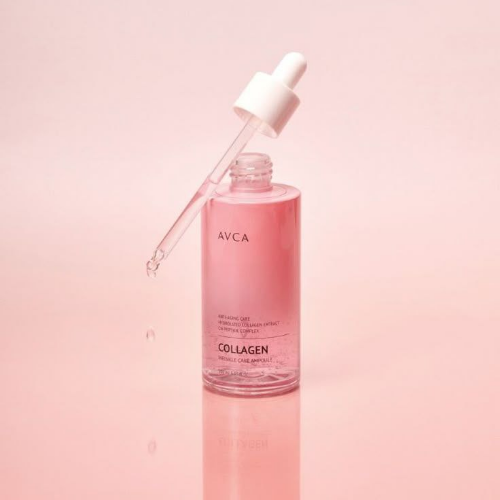
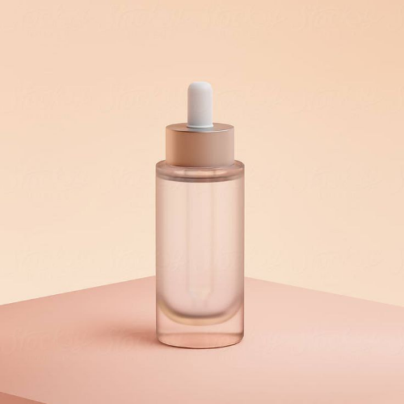
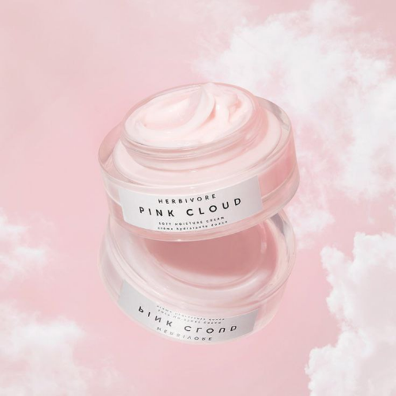

عناية يومية
الكولاجين (Collagen)
استعادة مرونة الجلد ومحاربة التجاعيد
الفوائد:
- **شد البشرة:** تقليل الترهل والخطوط الدقيقة.
- **تحسين المرونة:** جعل الجلد أكثر امتلاءً وحيوية.
- **ترطيب عميق:** دعم الحاجز الطبيعي للبشرة.
طريقة الاستخدام:
يُفضل استخدام السيروم أو الكريم الغني بالكولاجين ليلاً على بشرة نظيفة. يدلك بلطف بحركات صاعدة على الوجه والرقبة.

عناية ليلية
الريتينول (Retinol)
تجديد الخلايا ومحاربة التجاعيد
الفوائد:
- علاج الخطوط الدقيقة
- توحيد لون البشرة
- تحفيز الكولاجين
طريقة الاستخدام:
يوضع كمية بسيطة (حجم حبة البازلاء) ليلاً فقط على بشرة جافة تماماً. ابدأ مرتين أسبوعياً وبالتدريج.

ترطيب
مرطب VC
إشراقة وحماية من الجفاف
الفوائد:
- تفتيح بفضل فيتامين C
- قفل الرطوبة داخل البشرة
- قوام خفيف وسريع الامتصاص
طريقة الاستخدام:
يوضع كخطوة أخيرة في الروتين (قبل واقي الشمس صباحاً). يدلك بحركات دائرية حتى الامتصاص.

الاكل
تغذية البشرة من الداخل
إشراقة وحماية من الجفاف النتائج تظهر خلال 3–6 أسابيع
الفوائد:
- ترطيب: خيار + بطيخ + البرتقال + الطماطم.
- حماية: توت + الرمان+ الشاي الأخضر (مضادات أكسدة).
- نضارة وتفتيح البشرة:البرتقال+ الفراولة+ الكيوي+ الفلفل الحلو.
طريقة الاستخدام:
تناول هذه الأطعمة يوميًا ضمن وجبات متوازنة + التقليل من السكريات والمقليات + شرب ماء كافٍ